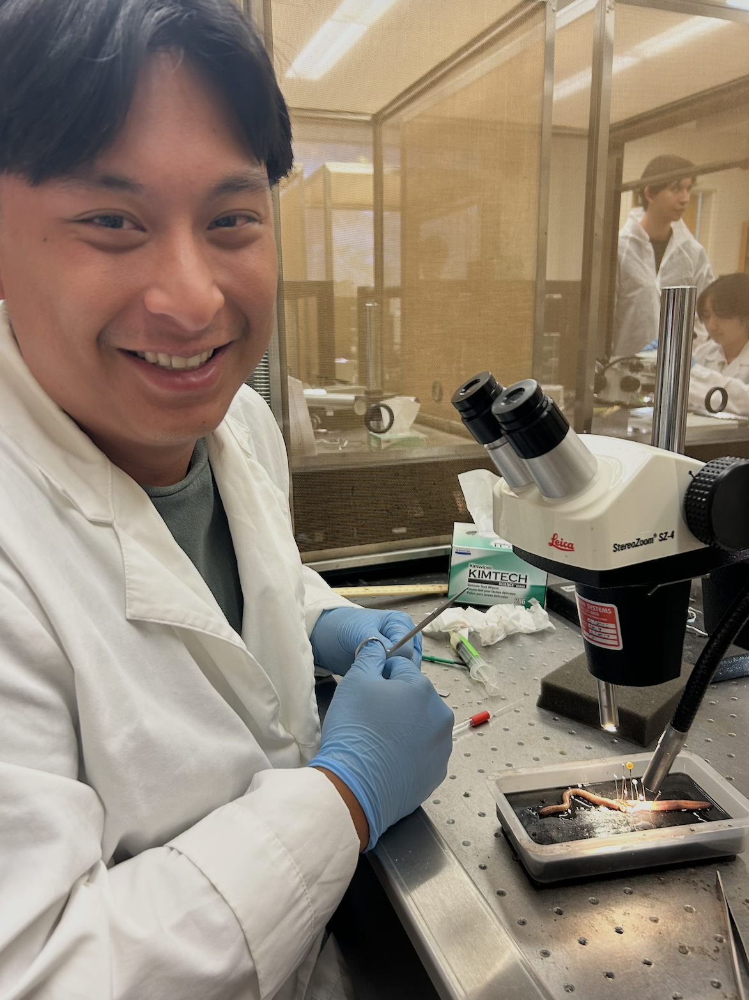
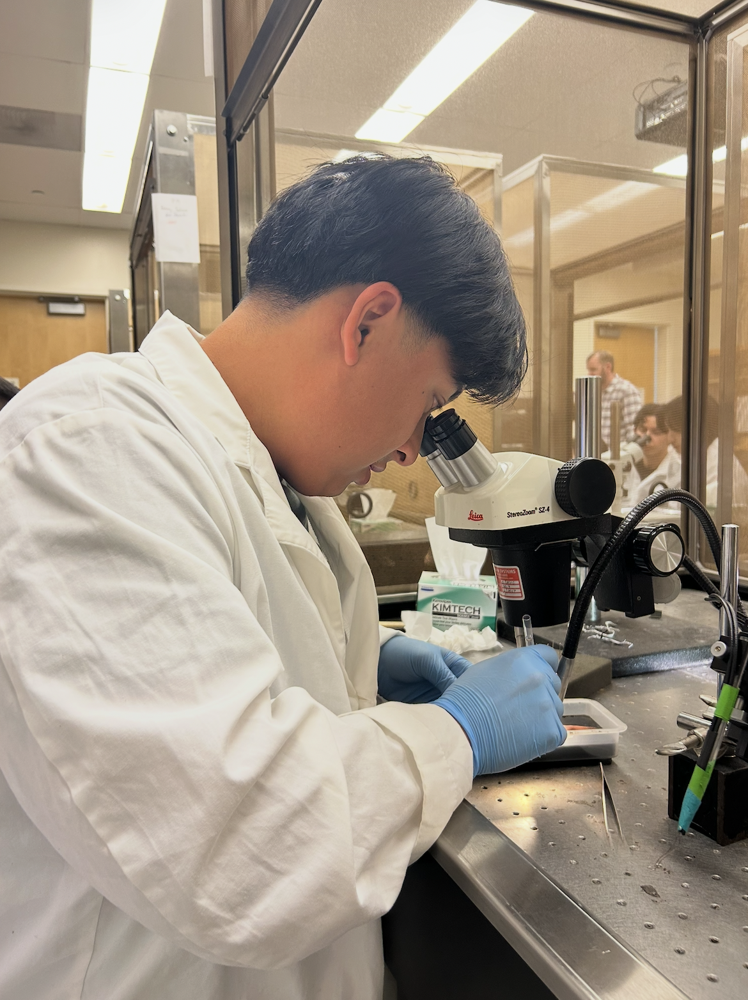
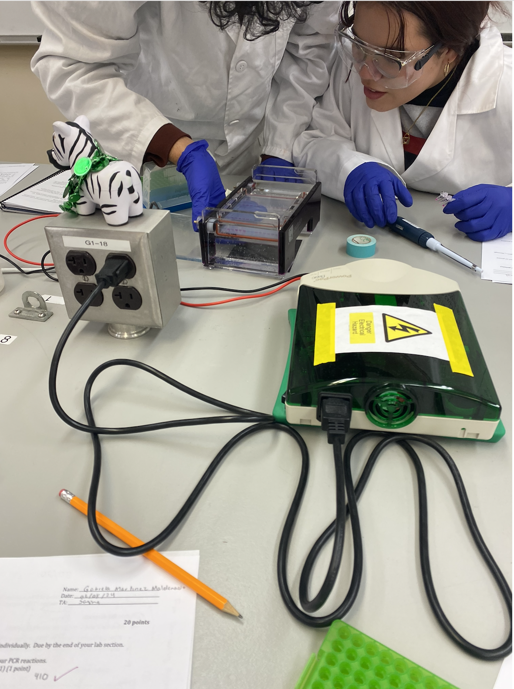
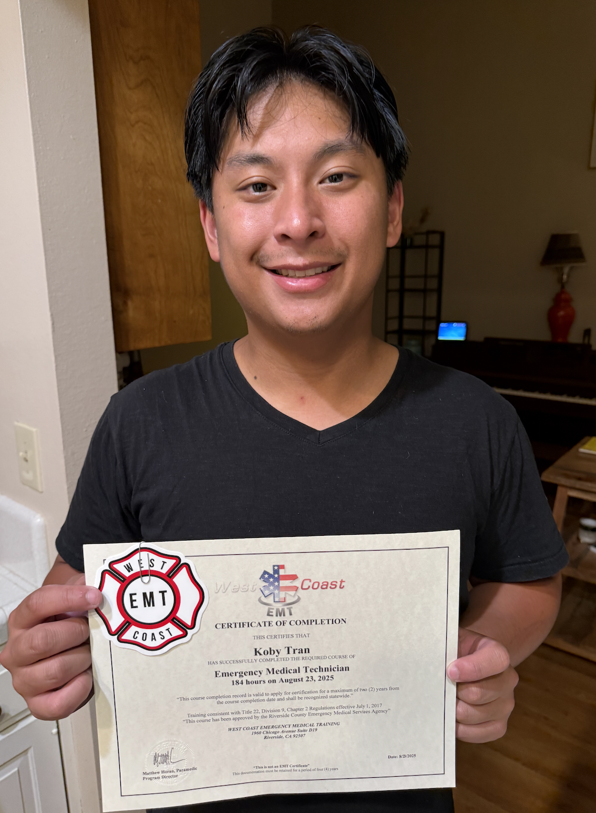

My name is Koby Tran, and I am fourth year undergraduate at the University of California, Riverside. I am currently pursuing a bachelor's of sicence in Neuroscience. I have a strong interest in understanding how the human brain and nervous system function, ans also how nuerological conditions can affect someone's daily life. Throughout my education, I have become particularly interested in the connection between neuroscience and clinical medicine. Learning about the nervous system, human physiology, and the mechanisms behind different diseases has motivated me to explore opportunities where I can apply classroom knowledge in real healthcare environments. I enjoy asking questions, understanding why biological processes occur, and connecting scientific concepts to practical situations involving patients and their health. To gain hands-on experience, I completed Emergency Medical Technician (EMT) training through West Coast EMT. This experience introduced me to emergency medical care, patient assessment, basic life support, and the importance of making informed decisions in time-sensitive situations. Through training and practical exposure, I developed a greater understanding of the responsibilities healthcare professionals carry and the importance of remaining calm, communicating effectively, and prioritizing patient safety.
• Accurately took and entered food and beverage orders, collaborating with culinary and healthcare staff to accommodate specific dietary needs.
• Served meals and beverages promptly, professionally, and courteously.
• Maintained strict compliance with established food safety, sanitation, and public health codes to keep dining and kitchen areas pristine.
• Focus on daily hands-on resident support, safety, and compassionate care
• Observe and report changes in physical or mental condition promptly to nursing and leadership staff
• Maintain accurate daily care records, safety checks, and shift-to-shift communications
• Ran sessions to help students improve skills and techniques
• Participated in Tournaments
• Helped scheduling organized play



